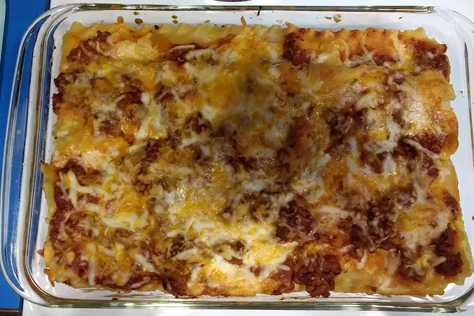

Favorite Lasagna Recipe

Description
Favorite lasagna is made with an easy meat sauce as the base.
The layer sauce with noodles and cheese, then bake until bubbly!
Ingredients
For the meat source:
- 2 teaspoons extra virgin olive oil
- 1 pound ground beef chuck
- 1/2 medium onion, diced (about 3/4 cup)
- 2 cloves garlic, minced
- 1 (14 ounce) can crushed tomatoes
- 2 tablespoons chopped fresh oregano, or 2 teaspoons dired oregano
- 1/4 cup chopped fresh parsley (preferably flat leaf), packed
- 1 tablespoon Italian seasoning
- 1 pinch garlic powder and/or garlic salt
- 1 tablespoon red or white wine vinegar
- 1 tablespoon to 1/4 cup sugar (to taste, optonal)
- Salt
To assemble the lasagna:
1/2 pound dry lasagna noodles (requires 9 lasagna noodles-unbroken)
15 ounces ricotta cheese
1 1/2 pounds (24 ounces) mozzarella cheese, grated or sliced
1/4 pound (4 ounces) freshly grated Parmesan cheese
Steps
- Put pasta water on to boil
- Brown the ground beef
- Cook the bell pepper, onions, garlic for 5 minutes. Add back the beef
and cook for another 5 minutes
- Transfer the medium sized pot, add tomatoes and remaining sauce ingredients
to build the sauce. Cook for 15 to 45 minutes, stirring often
- Boil and drain the lasagna noodles
- Heat the oven to 375oF
- Assembe the lasagna
- Bake at 375oF for 45 minutes. Uncover for the last 10 minutes
for a more crusty top or edge
- Cool and serve. Leftovers can be kept for about 5 days.